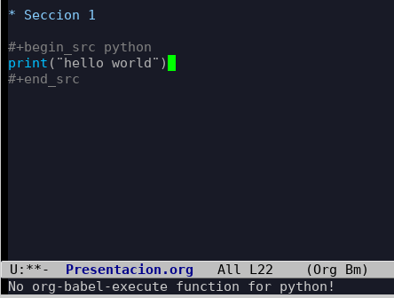
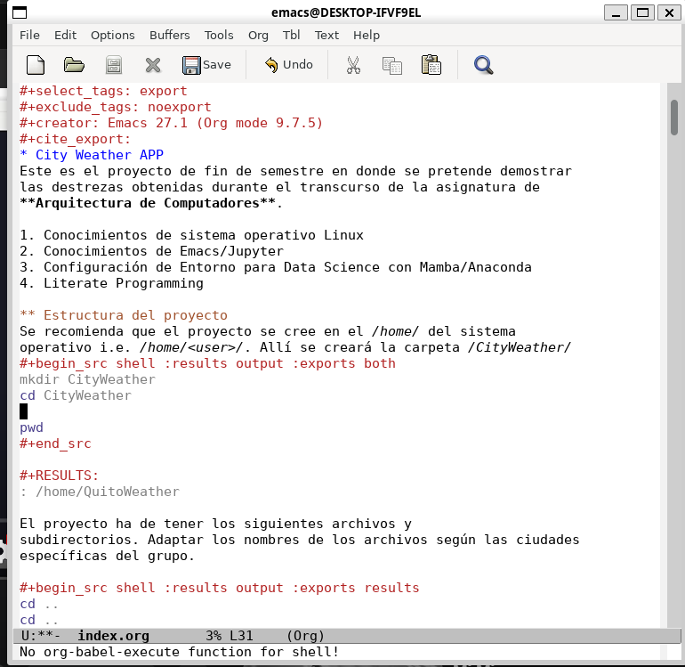

Preguntas Respuetas Problemas Proyecto
Índice
1. Problema con paquetes GNU/ELPA
Este problema consiste en que no se pueden instalar paquetes que pertenecen al conjunto de GNU. Se da sobre todo en versiones de Emacs anteriores a la 29. El error suele estar acompañando del mensaje:
…failed to verify signature keyring how can I solve it…
También suele tomar la forma de:

En estos casos se sugiere:
Editar el archivo
init.ely colocar la siguiente instrucción:(setq package-check-signature nil)- Ahora evalúe el Buffer con
M-x eval-buffer Ahora instale el paquete
gnu-elpa-keyring-updateM-x package-install RET gnu-elpa-keyring-update RET- Refrescar los contenidos de paquetes
M-x package-refresh-contents Ejecute la instalación:
M-x package-install RET M-x simple-httpd- Comente la línea añadida en el
init.elque anula el check de firmas
2. Problemas con org-babel Python
Al ejecutar un bloque de código Python se obtiene por respuesta
No org-babel-execute function for python!

Esto sucede si no existe la configuración del archivo init.el. Para
esto se recomienda seguir la explicación que ya se dio para el examen
del Primer Bimestre. Revise el vídeo de configuración del archivo
init.el. No olvide que la línea 43 define la ubicación del interprete
de Python. Esta configuración le indica a Emacs qué interprete
utilizar, pudiendo cambiarlo según nuestras necesidades
específicas. Ya que el objetivo de usar mamba es crear entornos con
paquetes diferentes específicos para un conjunto de problemas
determinados. Por defecto Emacs buscará el path de instalación de
Python en el sistema.
;; Set the correct path to the Python executable within your conda environment (setq org-babel-python-command "/home/<user>/miniforge3/envs/tfmlenv/bin/python")
Las líneas 45 a 50 del archivo activan las funciones para los lenguajes de programación a utilizar.
;; Set up Python environment and Java for org-mode (org-babel-do-load-languages 'org-babel-load-languages '((python . t) (java . t) (shell .t)))
3. Resultado de Ejecución de Python: None
Si luego de ejecutar C-c C-c en el bloque de código python, el
resultado es None, es posible que cuando abrió Emacs no lo haya
hecho con el entorno del interprete activado. En este caso, la
sugerencia es que cierre emacs y en el terminal active el interprete
que tiene configurado en la linea 43 del archivo init.el. Una vez
activado, abra emacs desde el terminal. Por ejemplo, si el entorno
configurado es el iccd332:
mamba activate iccd332 emacs &
Adicionalmente, debe observar que en el archivo provisto index.org
existen ciertas configuraciones para enrutar la salida del resultado
tales como: #+begin_src python :session :results output
def multiplicar(a,b): return a*b print(multiplicar(3,3))
9
Finalmente, observe que en el inicio del bloque de python éste esté
escrito como #+begin_src python... y no como #+begin_src Python....
4. Problemas org-babel shell
Si se tiene problema en la ejecución de comandos en el shell como muestra la Figura 1

Figura 1: Ejecución de bloque shell en Emacs
En este caso puede dar los siguientes comandos desde Emacs:
M-x load-library RET ob-shell RET